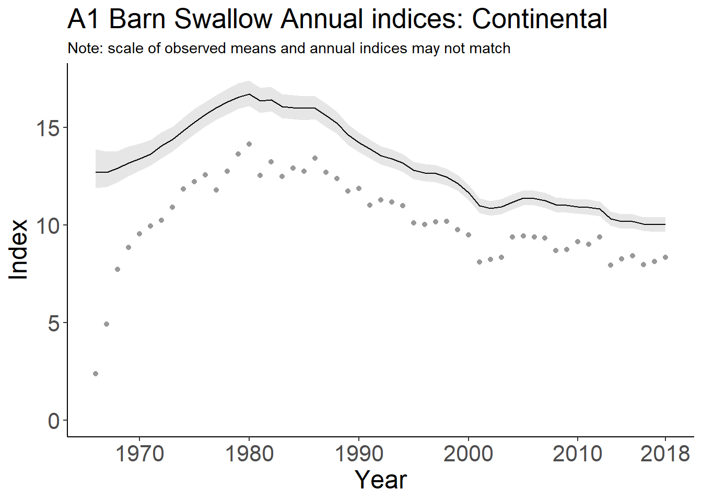
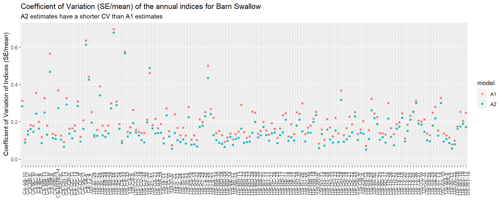
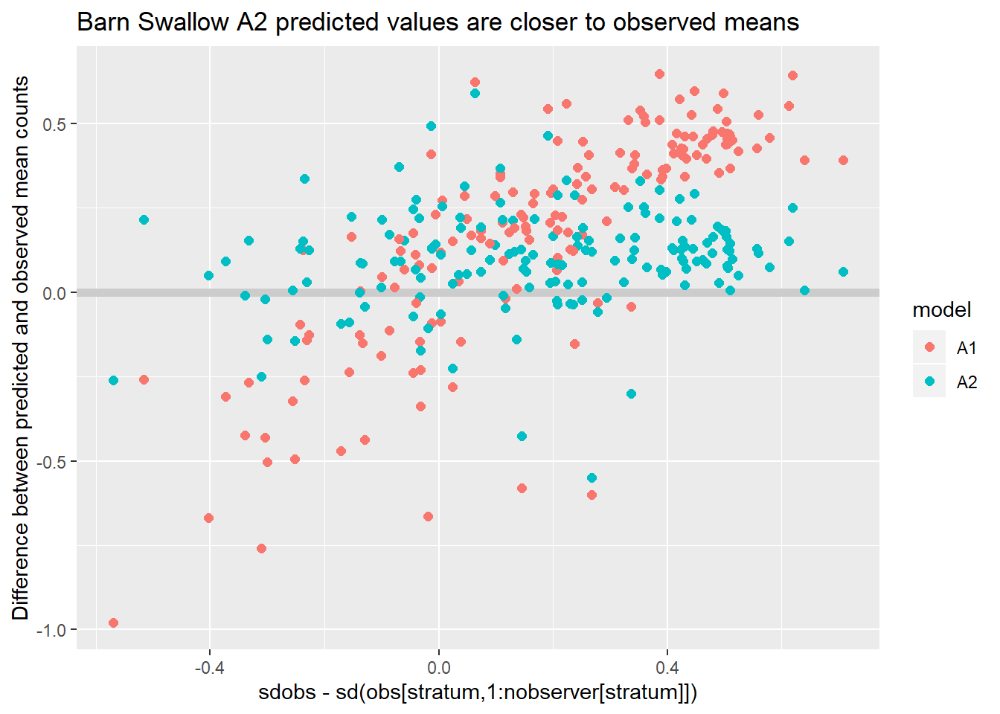
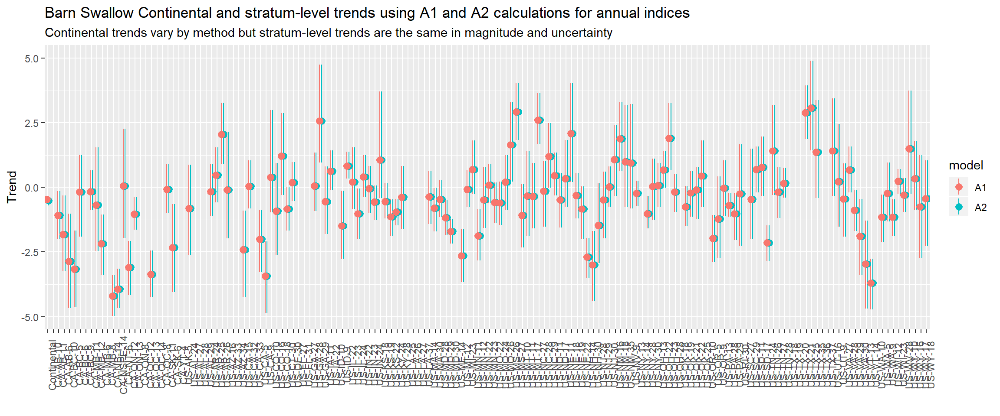

Last updated: 2019-11-14
Checks: 5 2
Knit directory: BBSIndices/
This reproducible R Markdown analysis was created with workflowr (version 1.4.0). The Checks tab describes the reproducibility checks that were applied when the results were created. The Past versions tab lists the development history.
Great! Since the R Markdown file has been committed to the Git repository, you know the exact version of the code that produced these results.
Great job! The global environment was empty. Objects defined in the global environment can affect the analysis in your R Markdown file in unknown ways. For reproduciblity it’s best to always run the code in an empty environment.
The command set.seed(20191016) was run prior to running the code in the R Markdown file. Setting a seed ensures that any results that rely on randomness, e.g. subsampling or permutations, are reproducible.
Great job! Recording the operating system, R version, and package versions is critical for reproducibility.
To ensure reproducibility of the results, delete the cache directory index_cache and re-run the analysis. To have workflowr automatically delete the cache directory prior to building the file, set delete_cache = TRUE when running wflow_build() or wflow_publish().
Using absolute paths to the files within your workflowr project makes it difficult for you and others to run your code on a different machine. Change the absolute path(s) below to the suggested relative path(s) to make your code more reproducible.
| absolute | relative |
|---|---|
| C:/Users/smithac/Documents/BBSIndices/analysis/index.rmd | analysis/index.Rmd |
Great! You are using Git for version control. Tracking code development and connecting the code version to the results is critical for reproducibility. The version displayed above was the version of the Git repository at the time these results were generated.
Note that you need to be careful to ensure that all relevant files for the analysis have been committed to Git prior to generating the results (you can use wflow_publish or wflow_git_commit). workflowr only checks the R Markdown file, but you know if there are other scripts or data files that it depends on. Below is the status of the Git repository when the results were generated:
Ignored files:
Ignored: .Rhistory
Ignored: .Rproj.user/
Untracked files:
Untracked: Barn Swallow continental indices.pdf
Untracked: Barn Swallowstrata indices.pdf
Untracked: Barn Swallowtrend map.pdf
Untracked: Chestnut-collared Longspur continental indices.pdf
Untracked: Chestnut-collared Longspurstrata indices.pdf
Untracked: Chestnut-collared Longspurtrend map.pdf
Untracked: analysis/CCLO comparison.pdf
Untracked: analysis/CCLO comparison.tex
Untracked: analysis/CCLO_commparison.log
Untracked: analysis/CCLO_commparison.tex
Untracked: analysis/Rplots.pdf
Untracked: analysis/index.log
Untracked: analysis/index.tex
Untracked: analysis/index_cache/
Untracked: docs/figure/index_pdf.Rmd/
Note that any generated files, e.g. HTML, png, CSS, etc., are not included in this status report because it is ok for generated content to have uncommitted changes.
These are the previous versions of the R Markdown and HTML files. If you’ve configured a remote Git repository (see ?wflow_git_remote), click on the hyperlinks in the table below to view them.
| File | Version | Author | Date | Message |
|---|---|---|---|---|
| Rmd | 26c1732 | Adam C Smith | 2019-11-14 | tiny tweak |
| Rmd | 148d61a | Adam C Smith | 2019-11-14 | adding two species |
| Rmd | 4dab010 | Adam C Smith | 2019-11-14 | adding two species |
| Rmd | 541de01 | Adam C Smith | 2019-11-14 | adding extra plot showing trend differences |
| Rmd | 164191a | Adam C Smith | 2019-11-12 | adding analysis backend |
| Rmd | ebe00d4 | Adam C Smith | 2019-11-12 | updating to use WOTH |
| html | ebe00d4 | Adam C Smith | 2019-11-12 | updating to use WOTH |
| html | 30a0283 | AdamCSmithCWS | 2019-11-01 | Build site. |
| Rmd | ab27179 | AdamCSmithCWS | 2019-11-01 | Publish the initial files for myproject |
| Rmd | bfe45b3 | Adam C Smith | 2019-10-17 | Start workflowr project. |
Bill Link’s memo from October 15 outlines the differences in precision for two ways of estimating BBS annual indices. Here I’ll use real BBS data to demonstrate the differences in accuracy of the two approaches, i.e., that using A1 results in a systematic over-estimation of the mean observed counts. And, demonstrate that the biased estimates of precision in the annual indices from using the A2 approach (defined below) do not translate into biased estimates of precision in the trends.
A1 is the standard BBS approach, with n calculated following Sauer and Link 2011, as the expected count from a new observer-route combination.
A2 is the approach I (Adam Smith) have been using lately, with n calculated as the mean of the expected counts from existing observer-route combinations.
I’ve run the first difference BBS model on Barn Swallow and Chestnut-collared Longspur, and then calculated the annual indices using both A1 and A2. In this version of the model the variance of the observer-route effects is a fixed effect estimated as a single value across the full survey (i.e., there is no parameter that estimates a stratum-specific observer-route variance).
These plots of the annual indices show the estimated annual indices from each model along with the observed mean counts for each year. It is relatively easy to see that there’s a difference in teh precision of the two estimates. But, importantly, there’s also a difference in the overall magnitude of the estimates. 
| Version | Author | Date |
|---|---|---|
| 30a0283 | AdamCSmithCWS | 2019-11-01 |
| Version | Author | Date |
|---|---|---|
| 30a0283 | AdamCSmithCWS | 2019-11-01 |
As Bill described in his note, the A2 approach does appear to overestimate the precision of the annual indices. For example, if we look at the coefficient of variation for the annual indices for Barn Swallow, the CV of A2 is almost always smaller than the CV of A1, and the same is true for Chestnut-collared Longspur although it’s not shown here. 
| Version | Author | Date |
|---|---|---|
| 30a0283 | AdamCSmithCWS | 2019-11-01 |
The magnitude of the predicted indices is mportant so that:
Although simplified, I’ve used the estimated posterior means as simple estimates of:
I’ve also calculated the observed mean count in a given stratum and year for comparison
If we compare the differences between the modeled annual mean counts (A1 and A2) and the observed mean counts, this should provide a measure of:
What we see is that both approaches tend to over-estimate the observed mean counts. However, the A2 approach, generates predicted values that are much more similar to the observed mean counts (i.e. the zero-line below).

| Version | Author | Date |
|---|---|---|
| 30a0283 | AdamCSmithCWS | 2019-11-01 |
The relationship between the overall observer-route variance (observer variance used in the 0.5*variance retransformation factor of approach A1), and the stratum-level variance of the observer-route effects (variance of the observer-route effects in a given stratum) partly explains why the magnitude of the two sets of estimates differ. The difference between the observed variance of observer-route effects in a given stratum (sd(obs[stratum,1:nobserver[stratum]])) and the overall sdobs provides a measure of how well the sdobs parameter represents the sd of the observer-route effects in a given stratum.
As you see below, this measure of the difference between the two estimates of observer-route variance is correlated with the difference between the mean predicted annual index from each model (average of the annual differences between model predictions).
| Version | Author | Date |
|---|---|---|
| 30a0283 | AdamCSmithCWS | 2019-11-01 |
This difference between the stratum-level observer variance and the overall observer variance is one of the reasons I suggested letting the observer variance vary among strata. Taking that approach has very similar effects on the index estimates as does using the A2 approach. I’ve more recently been using the A2 approach with an overall observer variance because it improves convergence for species and regions where the data are particularly sparse (i.e., avoids some situations where there is very little information available to estimate the variance of observer-route effects in a given stratum).
Finally, we can look at the differences in the trends estimated by each approach, both at a stratum level and at the continental scale
what we see is that the stratum level trends are effectively identical, both in their magnitude and in their uncertainty, but the continental estimates depend on the scaling (A1 vs A2). The continental trends vary because the relative magnitude of the annual indices in each stratum partly determine the stratum’s contribution to the continental trend. If the annual indices are more severly overestimated in a stratum with a different trend value, then that increases the stratum’s influence on the overall trend. For example, the continental trend from the A1 estimates is slightly less negative partly because of the much greater weight given to strata MT-11, CO-18, and ND-17 by the A1 calculation than is given by the A2 approach.
Given that the A2 approach:
and, that the overestimate of precision in the indices from the A2 approach (which Bill L. demonstrated in his note from October 15) does not appear to translate into overestimates in the trend precision It seems to me that the A2 approach is preferable
Warning: Removed 68 rows containing missing values (geom_pointrange).
| Version | Author | Date |
|---|---|---|
| 30a0283 | AdamCSmithCWS | 2019-11-01 |
The above plots are a bit crowded, but to summarize, the strata-based trends are identical (differences range from 10^{-14} to 10^{-14} for Barn Swallow, and from 0 to 0 for Chestnut-collared Longspur, and the differences in the widths of the credible intervals range from -210^{-14} to 210^{-14}) for Barn Swallow and from 10^{-14} to 0) for Chestnut-collared Longspur. By contrast, the continental trend estimates differ by -0.05 %/year for Barn Swallow and by -0.4 %/year for Chestnut-collared Longspur. The widths of the CIs differ by 0.03 %/year for Barn Swallow and by 0.3 %/year for Chestnut-collared Longspur.
Below are the annual index plots for each stratum and method. Grey dots are the observed mean counts
sessionInfo()R version 3.6.1 (2019-07-05)
Platform: x86_64-w64-mingw32/x64 (64-bit)
Running under: Windows 10 x64 (build 15063)
Matrix products: default
locale:
[1] LC_COLLATE=English_Canada.1252 LC_CTYPE=English_Canada.1252
[3] LC_MONETARY=English_Canada.1252 LC_NUMERIC=C
[5] LC_TIME=English_Canada.1252
attached base packages:
[1] stats graphics grDevices utils datasets methods base
other attached packages:
[1] ggrepel_0.8.1 dplyr_0.8.3 ggforce_0.3.1 ggplot2_3.2.1
[5] tidyr_1.0.0 bbsBayes_2.0.0
loaded via a namespace (and not attached):
[1] progress_1.2.2 tidyselect_0.2.5 xfun_0.10
[4] purrr_0.3.3 lattice_0.20-38 colorspace_1.4-1
[7] vctrs_0.2.0 htmltools_0.4.0 yaml_2.2.0
[10] utf8_1.1.4 rlang_0.4.1 pillar_1.4.2
[13] glue_1.3.1 withr_2.1.2 tweenr_1.0.1
[16] rappdirs_0.3.1 sp_1.3-1 lifecycle_0.1.0
[19] stringr_1.4.0 munsell_0.5.0 gtable_0.3.0
[22] workflowr_1.4.0 coda_0.19-3 evaluate_0.14
[25] labeling_0.3 knitr_1.25 parallel_3.6.1
[28] fansi_0.4.0 highr_0.8 Rcpp_1.0.2
[31] scales_1.0.0 backports_1.1.5 farver_1.1.0
[34] fs_1.3.1 rjags_4-10 hms_0.5.2
[37] digest_0.6.22 stringi_1.4.3 polyclip_1.10-0
[40] grid_3.6.1 rprojroot_1.3-2 cli_1.1.0
[43] rgdal_1.4-7 jagsUI_1.5.1 tools_3.6.1
[46] magrittr_1.5 lazyeval_0.2.2 tibble_2.1.3
[49] crayon_1.3.4 whisker_0.4 pkgconfig_2.0.3
[52] zeallot_0.1.0 ellipsis_0.3.0 MASS_7.3-51.4
[55] prettyunits_1.0.2 assertthat_0.2.1 rmarkdown_1.16
[58] R6_2.4.0 git2r_0.26.1 compiler_3.6.1